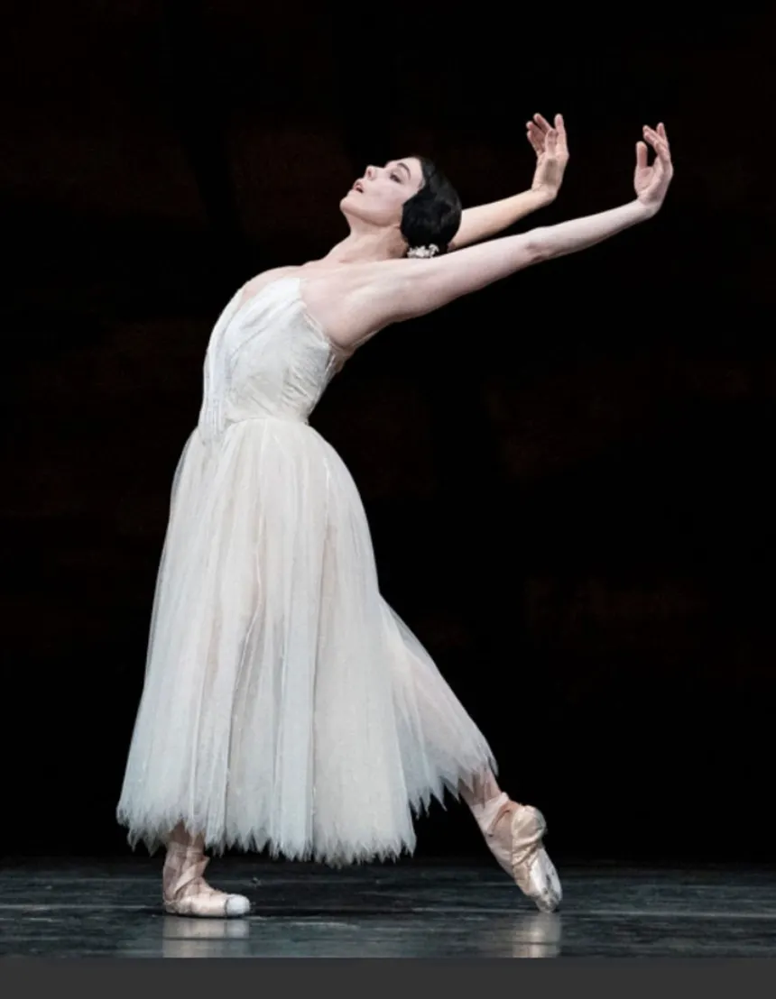
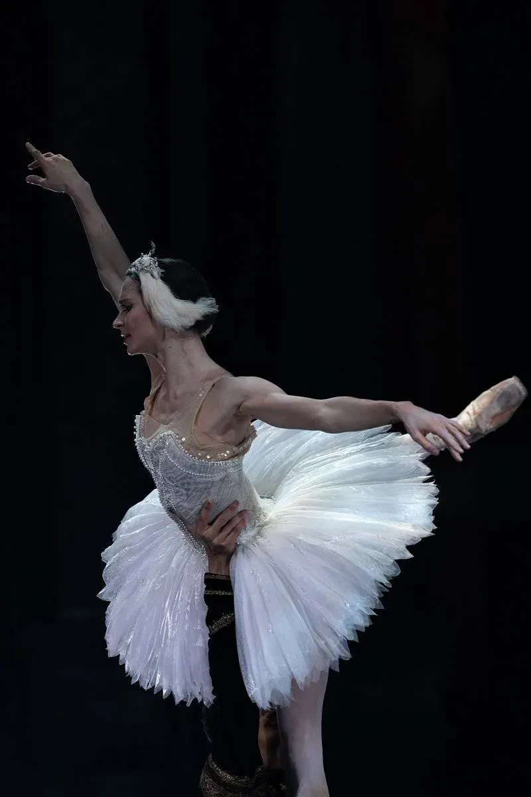

Svetlana Zakharova

Svetlana Zakharova nasceu em 10 de junho de 1979, na cidade de Lutsk, na Ucrânia, e atualmente tem 47 anos. Ela é uma das bailarinas mais importantes do balé clássico russo. Svetlana começou a estudar dança aos 6 anos de idade e, aos 10 anos, entrou para a Escola Coreográfica de Kiev. Mais tarde, estudou na famosa Academia Vaganova de Ballet, em São Petersburgo. Ao longo de sua carreira, foi primeira-bailarina do Mariinsky Ballet e do Bolshoi Ballet, além de receber o título de étoile do Teatro alla Scala, em Milão. Entre os balés mais famosos que apresentou estão O Lago dos Cisnes, interpretando Odette e Odile, Giselle, La Bayadère, como Nikiya, e A Bela Adormecida, como Aurora. Sua técnica, elegância e grande domínio do balé fizeram dela uma das bailarinas mais reconhecidas internacionalmente.
Natalia Osipova

Natalia Osipova nasceu em 18 de maio de 1986, em Moscou, na Rússia, e tem 40 anos. É considerada uma das grandes bailarinas de sua geração e atualmente é principal dancer do The Royal Ballet, em Londres. Natalia começou sua formação em balé ainda criança e, aos 8 anos, entrou para a Escola de Ballet Mikhail Lavrovsky. Depois, estudou na famosa Academia Coreográfica de Moscou, ligada ao Bolshoi. Durante sua carreira, também passou por importantes companhias, como o Bolshoi Ballet, o Mikhailovsky Ballet e o American Ballet Theatre. Entre suas apresentações mais conhecidas estão Don Quixote, no papel de Kitri, Giselle, La Bayadère e La Sylphide. Natalia é conhecida principalmente por sua grande energia, técnica e expressividade durante suas apresentações.
Marianela Núñez

Marianela Núñez nasceu em 23 de março de 1982, em Buenos Aires, na Argentina, e tem 44 anos. Ela é uma famosa bailarina argentina-britânica e uma das principais bailarinas do The Royal Ballet, em Londres. Marianela começou a fazer aulas de dança aos 3 anos de idade e, aos 6 anos, entrou para a Escola de Ballet do Teatro Colón, uma das instituições culturais mais importantes da Argentina. Mais tarde, estudou na Royal Ballet School, em Londres. Durante sua carreira, destacou-se interpretando grandes personagens do repertório clássico. Entre suas apresentações mais famosas estão Giselle, Don Quixote, no papel de Kitri, O Lago dos Cisnes, interpretando Odette e Odile, e La Bayadère, como Nikiya. Marianela é reconhecida por sua técnica, musicalidade e expressividade, sendo uma das bailarinas mais admiradas do balé internacional.
Alina Cojocaru

Alina Cojocaru nasceu em 27 de maio de 1981, em Bucareste, na Romênia, e tem 45 anos. É uma importante bailarina romena que se destacou internacionalmente por sua técnica, delicadeza e expressividade. Antes de se dedicar ao balé, Alina praticou ginástica e, aos 9 anos, começou a estudar em uma escola de balé em Bucareste. Ao longo de sua formação, estudou na Escola de Ballet de Kiev e também na famosa Royal Ballet School, em Londres, onde recebeu uma bolsa do Prix de Lausanne. Em sua carreira, foi principal dancer do The Royal Ballet e Lead Principal do English National Ballet. Entre suas apresentações mais conhecidas estão Giselle, O Quebra-Nozes, como Clara, A Bela Adormecida, como Aurora, e a versão de Giselle criada por Akram Khan para o English National Ballet. Alina é reconhecida mundialmente por sua interpretação delicada e por sua grande qualidade artística.
Polina Semionova

Polina Semionova nasceu em 13 de setembro de 1984, em Moscou, na Rússia, e tem 41 anos. É uma renomada bailarina russa que alcançou destaque internacional ainda muito jovem. Durante a infância, praticou patinação artística e participou de um conjunto de dança antes de entrar para a famosa Academia Coreográfica de Moscou, conhecida como Bolshoi Ballet School. Depois de concluir sua formação, tornou-se Principal Dancer do Berlin State Ballet e também atuou como principal bailarina do American Ballet Theatre. Atualmente, além de continuar ligada ao mundo da dança, também atua como professora na escola do Berlin State Ballet. Entre suas apresentações mais famosas estão O Lago dos Cisnes, interpretando Odette e Odile, La Bayadère, como Nikiya, Onegin, como Tatiana, e Giselle, como Giselle. Polina é conhecida por sua técnica, elegância e grande presença de palco.